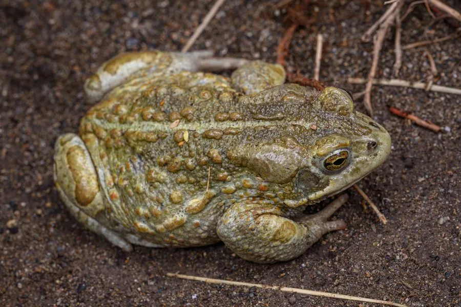

两栖动物 · 动物界
花背蟾蜍 Strauchbufo raddei

中国北方常见的蟾蜍，背部有醒目的花斑，栖息于草原、沙地和农田，耳后腺可分泌毒液，耐旱能力较强。
- 分类
- 门脊索动物门纲两栖纲目无尾目科蟾蜍科属花背蟾蜍属
- 栖息环境
- 草原、沙地、农田、盐碱地及村庄附近的潮湿处
- 地理分布
- 中国北方、蒙古、朝鲜半岛和俄罗斯远东地区
- 保护级别
- IUCN 无危（LC）；中国“三有”保护动物
物种志
花背蟾蜍体长 5–8 厘米，雌蟾略大。皮肤粗糙，背面呈黄绿色、灰绿色或橄榄色，散布红褐色、深绿色斑块和疣粒，形成花背图案，腹面灰白色；耳后腺发达，四肢短粗，趾间蹼不发达，常以爬行或短跳方式移动。
它分布于中国北方、蒙古、朝鲜半岛和俄罗斯远东地区，栖息于草原、沙地、农田、盐碱地和村庄附近，白天藏在土洞、石缝或草丛中，夜间捕食昆虫、蜘蛛和蠕虫。繁殖期在春季，雨后在池塘、水沟中产下长串卵带，蝌蚪约两个月变态。花背蟾蜍耐旱、耐寒，是北方农牧区常见的两栖动物，能捕食大量害虫，但过度放牧和湿地萎缩会影响其栖息。
形态与习性
- 食性昆虫、蜘蛛和蠕虫
- 体长约 5–8 cm，雌蟾略大
- 繁殖春季雨后产下长串卵带，蝌蚪约两个月变态
- 活动节律夜行性，白天藏在土洞或石缝中
- 耐旱能生活在草原、沙地和盐碱地
- 毒性耳后腺分泌毒液，接触后需洗手
趣味知识
- 花背蟾蜍背部红褐色与绿色斑块交错，像穿了一件花衣裳。
- 它常在雨后从土洞中钻出，在临时水洼里鸣叫繁殖。
- 花背蟾蜍耐旱耐寒，是中国北方草原和农田的常见居民。